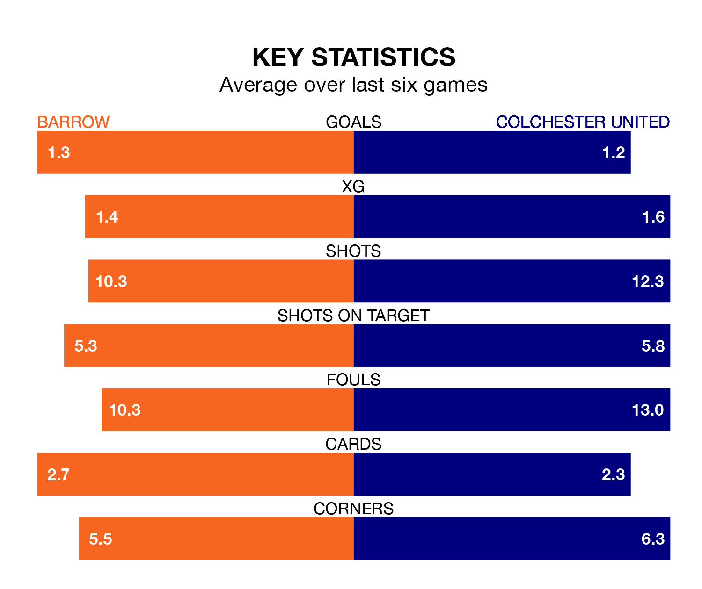

Colchester United travel to the SO Legal Stadium looking to secure a first win in six EFL League Two games against Barrow on Saturday.
The U's have lost one and drawn four matches since they last earned three points – against Morecambe on January 27.
They face a Barrow side who have won just two and lost three over that time.
Colchester are 22nd in the table after 34 games, of which they have won eight and drawn eight, earning 32 points.
Barrow are 16 places ahead of United in sixth, with 15 wins and 11 draws putting them on 56 points.
In the last 10 years, Barrow and Colchester have played each other on seven occasions. Barrow won three of them, Colchester one, and they drew three times.
On average, the Bluebirds scored 2.0 goals and the U's 1.1 in those matches.
Their last meeting was on November 25, when Barrow won 4-1 away.
With Paul Farman between the sticks, the Bluebirds can rely on one of the league's safest pair of hands. He has kept 11 clean sheets in his 32 appearances this season in EFL League Two.
In the U's' net, Owen Goodman has four clean sheets in 31 games. He has conceded a goal every 65 minutes, 20% more often than the 80 minutes between goals for Farman.
With 45 goals in 34 games so far this season, the visitors are scoring at below the league average rate with 1.3 goals per game. And they are conceding more than average, letting in 62 goals at a rate of 1.8 per game.
The home team are also below average scorers, with 1.4 goals per game, compared to a league average of 1.5. They have conceded 1.1 goals per game.
Barrow's last match was on Tuesday, a 2-0 win against Gillingham, with Emile Acquah and James Chester getting the goals for the Bluebirds.
Colchester drew 1-1 with Salford City last time out, on February 27, with Bradley Ihionvien on the scoresheet.
Saturday's match will be refereed by Scott Jackson, who has taken charge of 10 EFL League Two games so far this season, issuing one red card and booking 48 players. He has awarded four penalties.
The last Barrow game Jackson refereed was a 1-0 away win against Harrogate Town on September 2. He is yet to oversee a match featuring Colchester this season.
Updated: 09:34 (UTC), 08/03/24